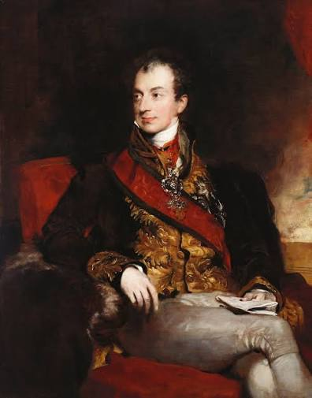
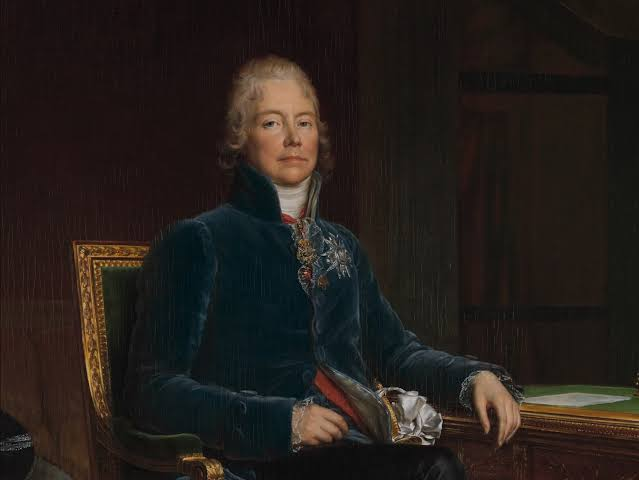
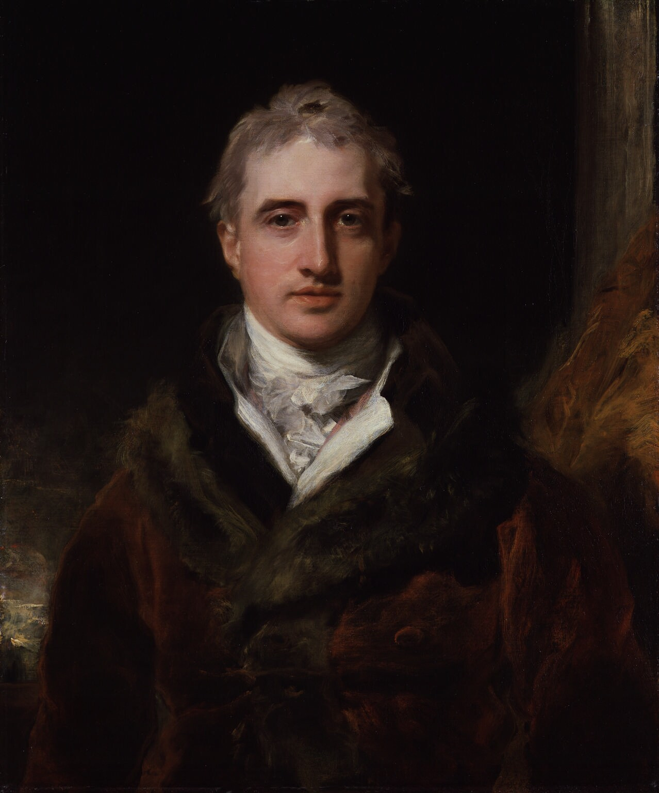
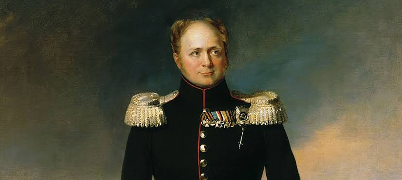

Después de las guerras napoleónicas, las principales potencias europeas se reunieron en el Congreso de Viena,
entre 1814 y 1815, para decidir cómo quedaría el mapa de Europa. Querían evitar que un solo país volviera a
dominar el continente, como había ocurrido con la Francia de Napoleón. Para ello, reorganizaron varios
territorios y favorecieron el regreso de algunas familias reales que habían perdido el trono.
El regreso de esas monarquías no puso fin a las ideas que se habían difundido desde la Revolución francesa. En
distintos lugares de Europa, hubo quienes pidieron constituciones que limitaran el poder de los reyes y
garantizaran libertades políticas. También surgieron movimientos que buscaban reunir en un mismo Estado a
territorios que consideraban parte de una misma nación. Estas demandas chocaron con el orden que las potencias
habían establecido en Viena.
Ideas principales
Restauración: Algunas familias reales recuperaron los tronos que habían perdido durante las revoluciones y las guerras napoleónicas.
Legitimidad dinástica: Se defendía la idea de que las familias que habían reinado tradicionalmente tenían derecho a volver al trono.
Equilibrio de poder: Las potencias reorganizaron el mapa de Europa para evitar que un solo país acumulara suficiente poder para imponerse a los demás.
Liberalismo y nacionalismo: Los liberales reclamaban constituciones y libertades políticas. Los movimientos nacionalistas buscaban que comunidades que se consideraban una nación pudieran formar su propio Estado.
Fue emperador de Francia y extendió la influencia francesa sobre buena parte de Europa.
Su caída dejó a las potencias europeas ante la tarea de decidir cómo se repartirían los
territorios y qué gobiernos quedarían al frente de ellos.

Klemens von Metternich
Fue un diplomático austríaco y una de las figuras centrales del Congreso de Viena. Defendía
la continuidad de las monarquías y veía con recelo los movimientos revolucionarios que
podían ponerlas en riesgo.

Charles-Maurice de Talleyrand
Fue el diplomático que representó a Francia en el Congreso de Viena. Su tarea era defender
los intereses de un país derrotado. Consiguió que Francia volviera a participar en las
negociaciones entre las grandes potencias.

Robert Castlereagh
Fue el representante británico en el Congreso de Viena. Defendió un equilibrio entre las
potencias europeas para que ninguna tuviera suficiente poder como para imponerse a las demás.

Alejandro I de Rusia
Fue el zar de Rusia y uno de los monarcas con mayor peso en la reorganización de Europa. Participó
en las negociaciones de Viena y defendió los intereses de Rusia en el reparto territorial.
De Viena a las barricadas: Europa entre acuerdos y revoluciones
Selecciona un acontecimiento para explorar qué sucedió y dónde ocurrió.
1814–1815
Congreso de Viena
Lugar: Viena, Imperio austríaco.
Las potencias europeas se reunieron para decidir cómo reorganizar el continente tras la caída de
Napoleón. Redibujaron fronteras, apoyaron el regreso de algunas familias reales y buscaron un
equilibrio que impidiera que un solo país dominara Europa. Entre sus acuerdos estuvo la creación
de la Confederación Germánica, que agrupó a varios Estados de habla alemana.
Napoleón había vuelto al poder en Francia, pero su regreso terminó cuando las fuerzas de Wellington
y Blücher derrotaron a su ejército en Waterloo. Para entonces, las negociaciones del Congreso de Viena
ya habían concluido. La batalla puso fin al intento de Napoleón de recuperar el poder.
Las medidas de Carlos X para restringir libertades, entre ellas la de prensa, provocaron protestas en
París. Durante varios días, los rebeldes levantaron barricadas en las calles. Carlos X terminó dejando
el trono y Luis Felipe ocupó su lugar. Estas jornadas son las que Delacroix representó en La libertad
guiando al pueblo.
El Gobierno provisional belga declaró la independencia del Reino Unido de los Países Bajos. Así se rompió
una de las uniones territoriales establecidas después de las guerras napoleónicas. La declaración fue un
paso decisivo, aunque las disputas internacionales tardaron más en resolverse.
Lugar: Varias ciudades europeas, entre ellas Berlín y Frankfurt.
En distintas partes de Europa hubo levantamientos que reclamaban libertades políticas, mejoras sociales o
cambios en la forma de gobernar. En los territorios alemanes, algunos movimientos también pedían la unidad
nacional. La Asamblea de Frankfurt intentó darle forma a ese proyecto mediante una constitución, pero perdió
fuerza cuando las monarquías recuperaron el control.
Entre el regreso de los reyes y las demandas de cambio
Después de las guerras napoleónicas, las potencias intentaron dar estabilidad a Europa mediante acuerdos
y la restauración de monarquías. Sin embargo, las revoluciones de 1830 y 1848 mostraron que muchas personas
seguían reclamando libertades, constituciones y cambios en el gobierno. El enfrentamiento entre esas demandas
y la defensa del poder monárquico marcó gran parte de la política europea del siglo XIX.
Una Europa que cambiaba en varios sentidos
Mientras los gobiernos intentaban mantener el orden, las fábricas transformaban el trabajo y crecían las
propuestas para mejorar la vida de los trabajadores. Los artistas románticos expresaban nuevas inquietudes
y los movimientos nacionalistas cuestionaban las fronteras existentes. Estos procesos se cruzaron y ayudaron
a transformar la Europa que había surgido del Congreso de Viena.